De BugOS Winkel
Bekende, veilige apps op één plek: Firefox, Spotify, Steam, LibreOffice en nog veel meer. Eén klik op Installeren en klaar. Updates gaan vanzelf.
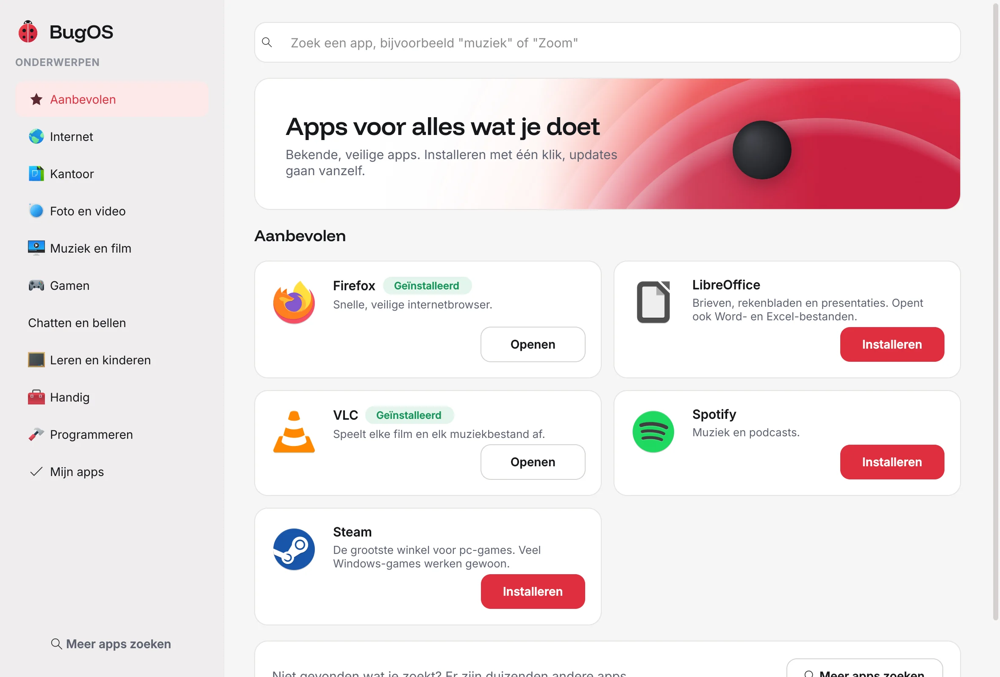
BugOS is een gratis besturingssysteem dat werkt zoals je gewend bent. Het kan niet stuk, houdt zichzelf bij en is fijn voor oma, gamers en programmeurs.
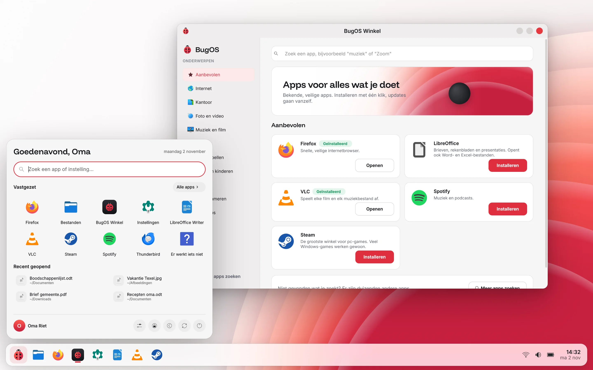
BugOS wordt in zijn geheel bijgewerkt, als één nieuwe versie. De vorige versie blijft gewoon bewaard. Werkt er na een update iets niet? Dan kies je bij het opstarten de versie van gisteren, en alles is weer zoals het was.
Grote knoppen, gewone woorden en slimme hulpjes. Zodat je kunt doen waarvoor je achter de computer zit.
Bekende, veilige apps op één plek: Firefox, Spotify, Steam, LibreOffice en nog veel meer. Eén klik op Installeren en klaar. Updates gaan vanzelf.

BugOS kijkt wifi, geluid, printer en meer na. Bij elk probleem staat een knop die het voor je oplost.
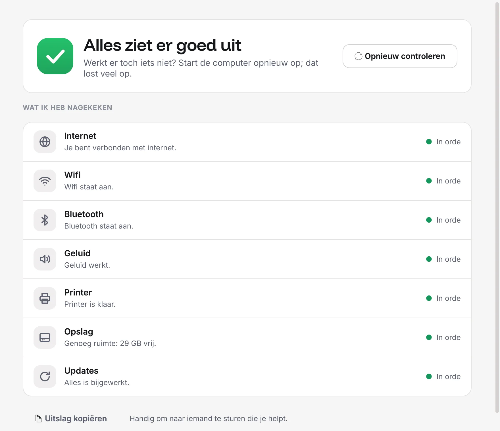
Dubbelklik op een .exe en hij start. Is er een betere versie voor BugOS? Dan stelt BugOS die voor.
Steam staat klaar, controllers werken meteen en de game-modus zet alles op volle kracht.
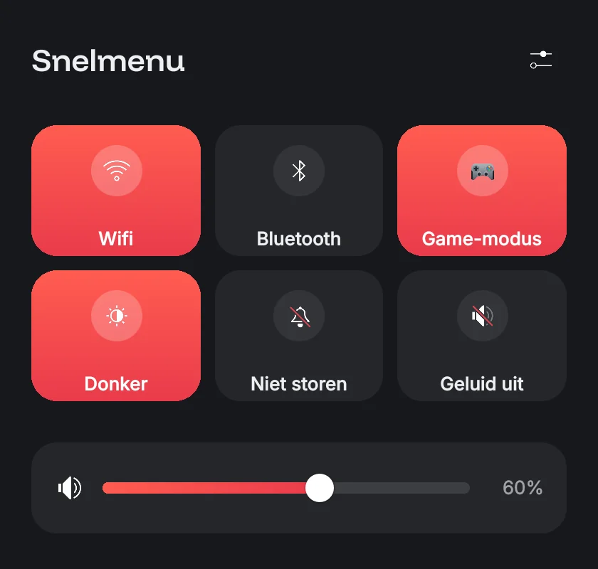
Steek een USB-schijf in, druk op de knop en je foto's en documenten staan veilig. Er wordt nooit iets weggegooid.
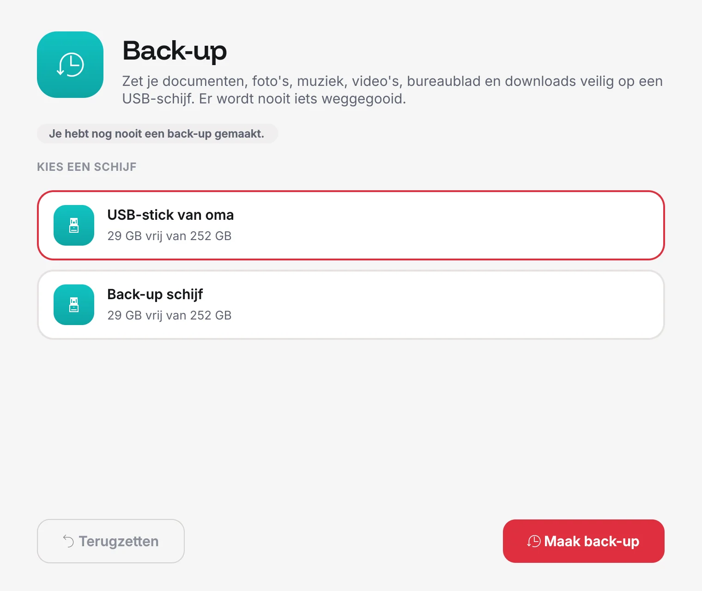
Eén schakelaar zet VS Code, containers en programmeertalen klaar. Elke Linux-versie in een eigen doosje, zonder je systeem te breken.
# Ontwikkelaarsmodus staat aan $ distrobox enter dev $ python3 --version Python 3.14 $ docker run hello-world ✓ werkt
Geen account nodig, geen reclame, en BugOS stuurt niks over jou naar wie dan ook.
Heeft je computer weinig geheugen? Dan zet BugOS vanzelf de lichte stand aan. Zware effecten uit, alles blijft vlot.
Nederlands en Engels zijn helemaal klaar, en vrijwilligers kunnen BugOS zonder programmeren vertalen in elke taal.
Schuif maar eens heen en weer. Elke app, elk menu en de achtergrond doen mee.
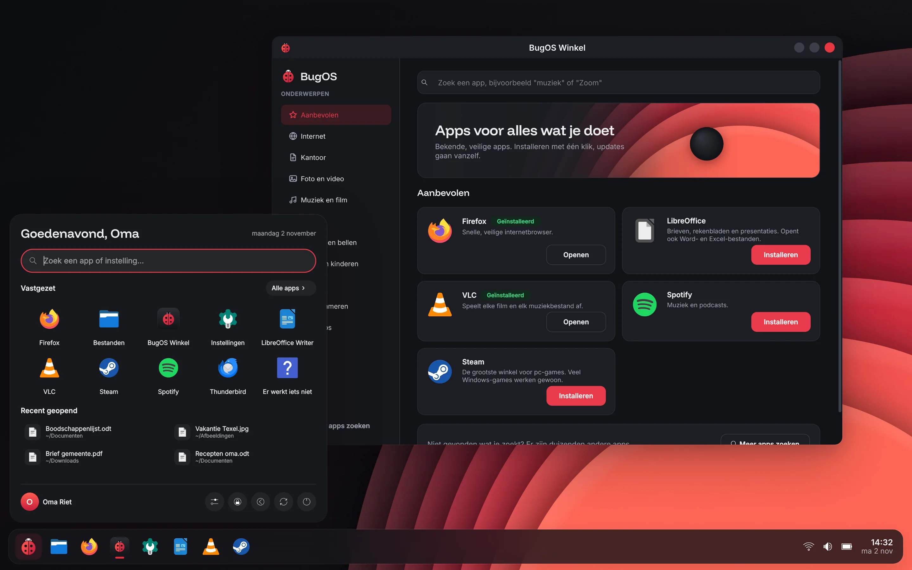
LichtDonker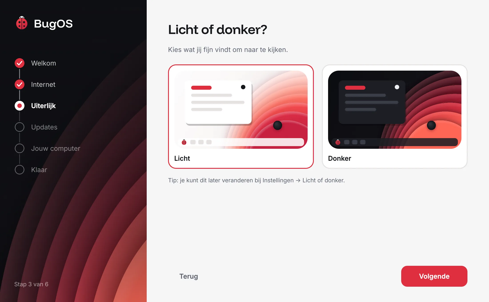
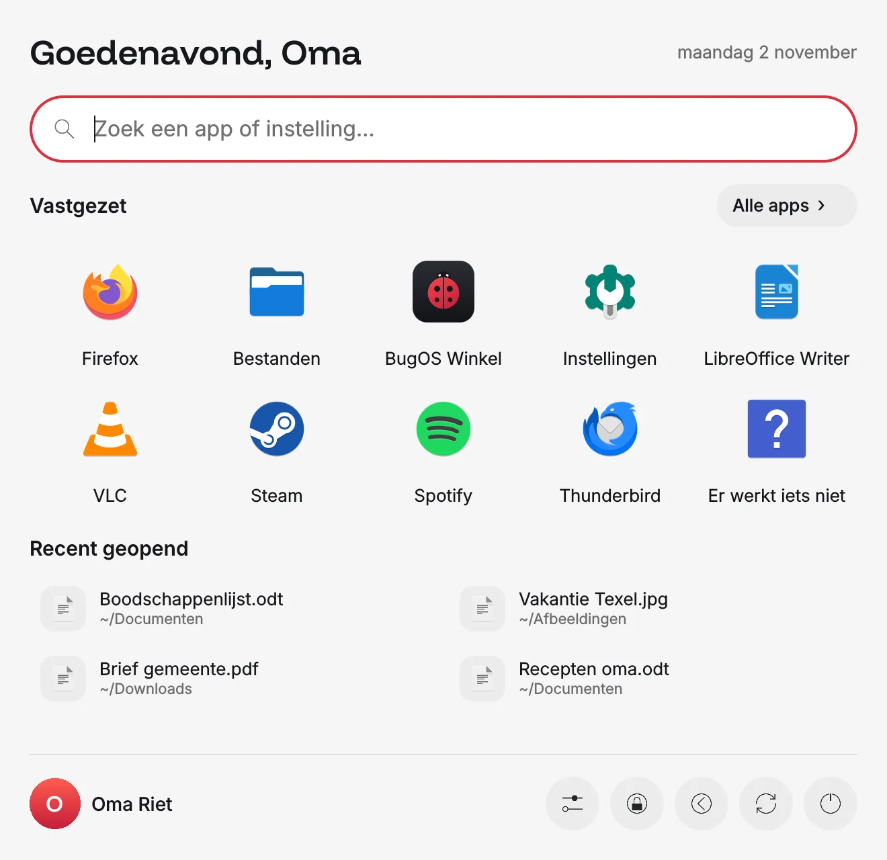
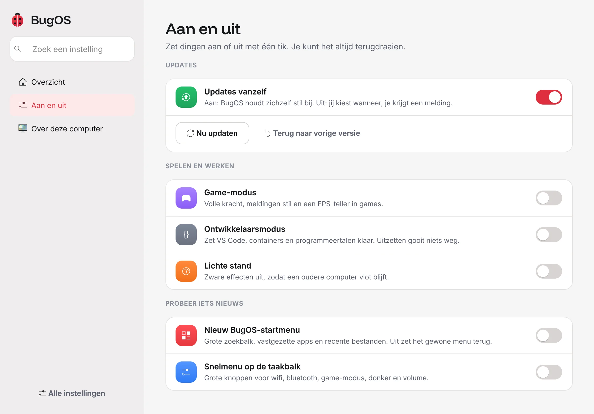
Het programmaatje BugOS Overstap doet het zware werk op je Windows-computer. Er gebeurt niks zonder dat jij op een knop drukt.
Kan je computer BugOS aan? Overstap kijkt het voor je na.
Je documenten, foto's, muziek, bladwijzers en achtergrond gaan naar een USB-schijf.
Wil je Windows houden? Dan maakt Overstap ruimte zodat BugOS ernaast past.
BugOS wordt gedownload, gecontroleerd en op een USB-stick gezet.
Steek de USB-schijf in, open "Bestanden van Windows" en druk op de knop. Je bestanden staan op de goede plek, en wat al op BugOS staat wordt nooit overschreven.
BugOS Overstap downloaden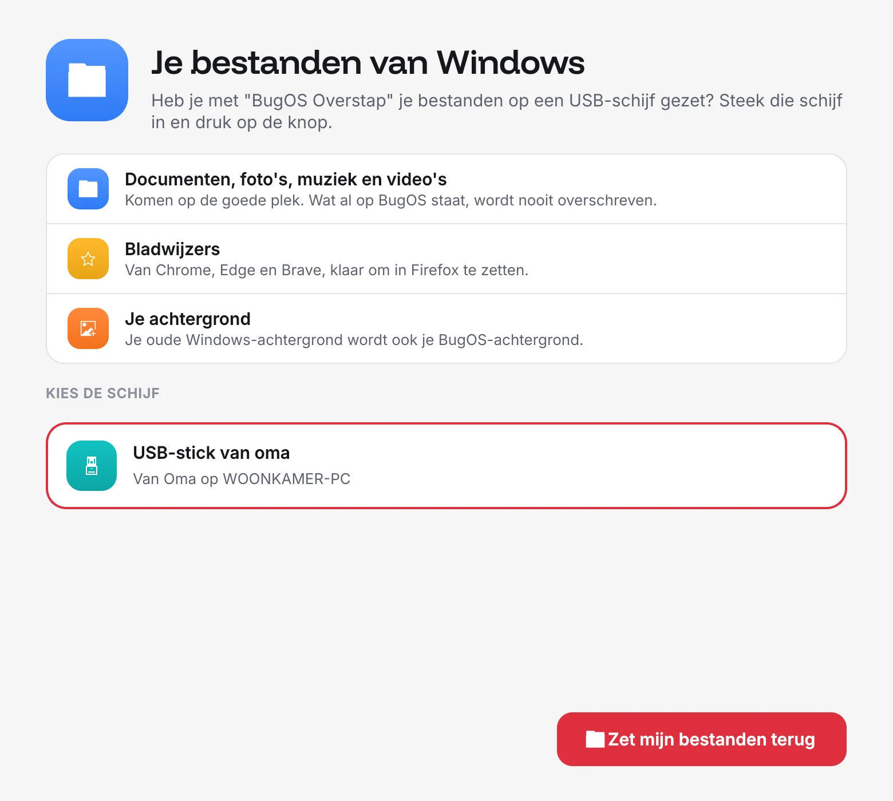
Probeer BugOS eerst vanaf een USB-stick: je computer verandert pas als jij op "BugOS installeren" drukt.
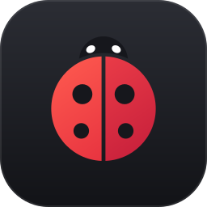
Voor de meeste computers en laptops, met een Intel- of AMD-processor.
Download (.iso) Ongeveer 5,6 GB · 64-bitHeb je een Nvidia-videokaart (GTX 16 of RTX)? Dan zit de juiste driver er al in.
Download (.iso) Ongeveer 6 GB · 64-bitBugOS Overstap kiest de goede versie, neemt je bestanden mee en maakt de USB-stick voor je.
BugOS Overstap (.zip) Voor Windows 10 en 11Stap over zonder USB-stick. Typ dit in de terminal en start opnieuw op:
sudo bootc switch ghcr.io/253ugursahin/bugos:latestBugOS is nog in ontwikkeling (versie 0.3). Probeer het eerst op een reserve-computer of in een virtuele pc.
Ja. BugOS is gratis en blijft gratis. De broncode is open (GPL-3.0), dus iedereen kan zien hoe het werkt. Er zit geen reclame in en je hebt geen account nodig.
Veel wel. Dubbelklik op een .exe en BugOS start hem met Wine. Voor bekende programma's, zoals Spotify of Zoom, biedt BugOS meteen de echte BugOS-versie aan. Sommige programma's, zoals Adobe of de nieuwste Office, werken niet; daarvoor stelt BugOS een goed alternatief voor.
Ja. BugOS Overstap kan Windows een beetje kleiner maken, zodat BugOS ernaast past. Bij het opstarten kies je dan welke je wilt gebruiken.
Dan kies je bij het opstarten de versie van gisteren. Alles is dan weer zoals het was. Je kunt het ook doen vanuit Instellingen, met de knop "Terug naar vorige versie".
Zeker. Steam met Proton zit erin, controllers werken meteen en de game-modus haalt alles uit je computer. Spellen met strenge anti-cheat (sommige online shooters) werken soms niet; kijk dat even na op protondb.com.
De meeste printers werken meteen. Werkt hij niet? Open dan "Er werkt iets niet": BugOS kijkt het na en helpt je de printer toe te voegen.
Ja. Het systeem zelf kan niet worden aangepast door programma's, apps draaien in hun eigen afgeschermde ruimte en updates komen vanzelf. Daarnaast verzamelt BugOS niks over jou.
Op de meeste computers en laptops van de laatste 15 jaar met een 64-bit processor en minstens 4 GB geheugen. Voor oudere computers zet BugOS vanzelf de lichte stand aan.